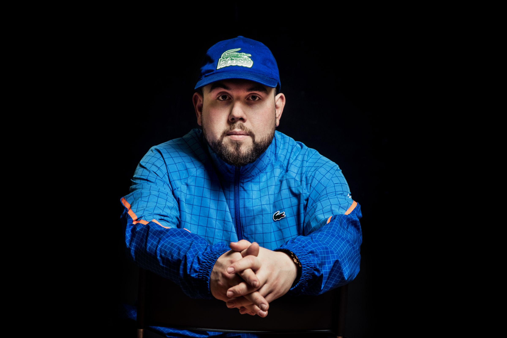
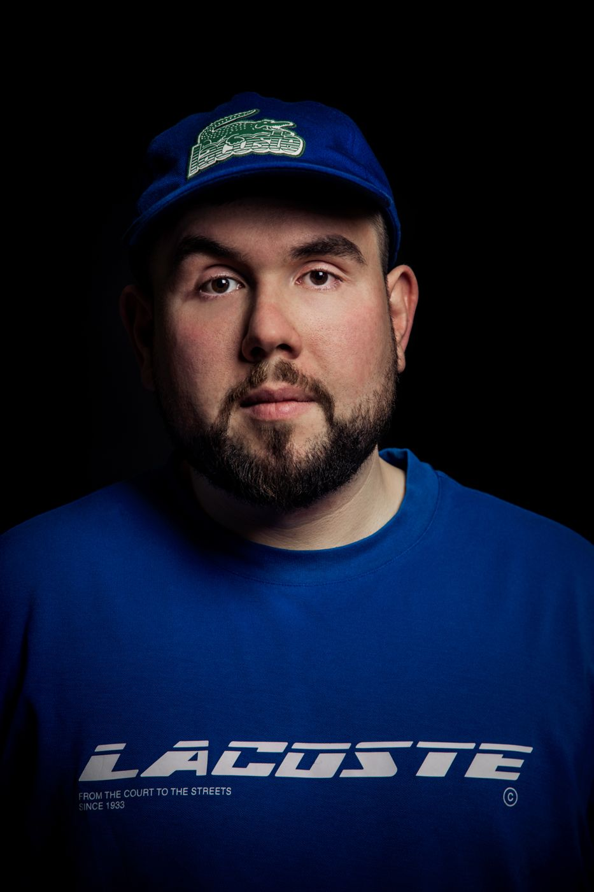
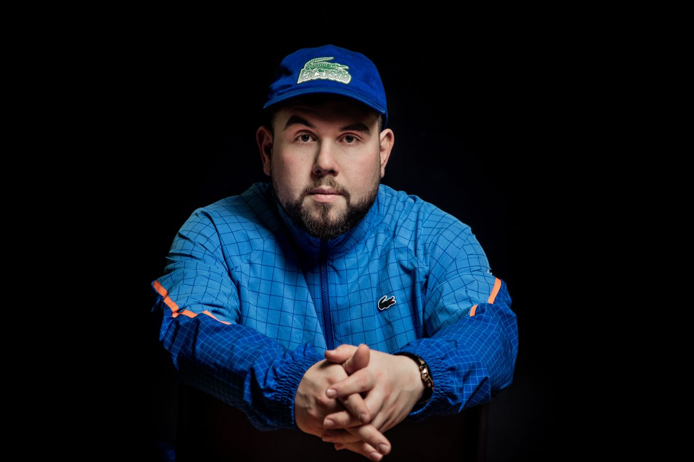
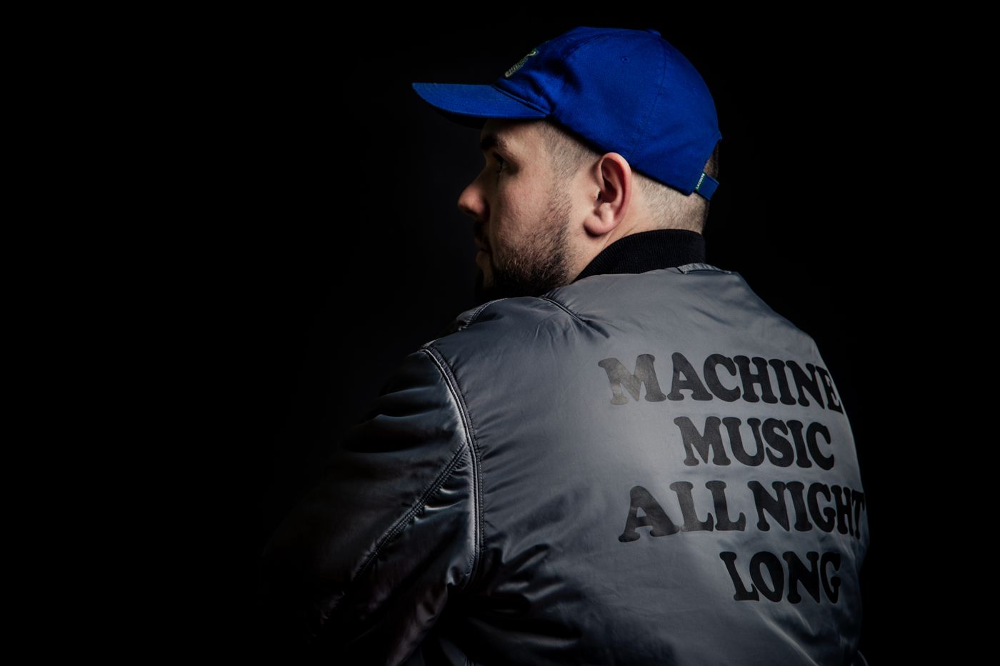
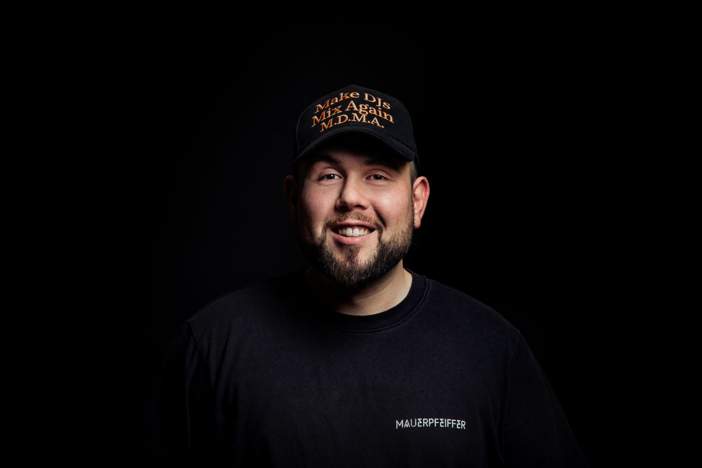
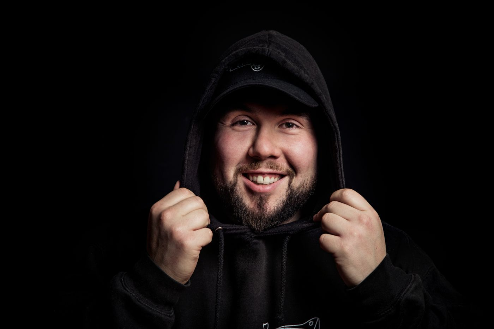
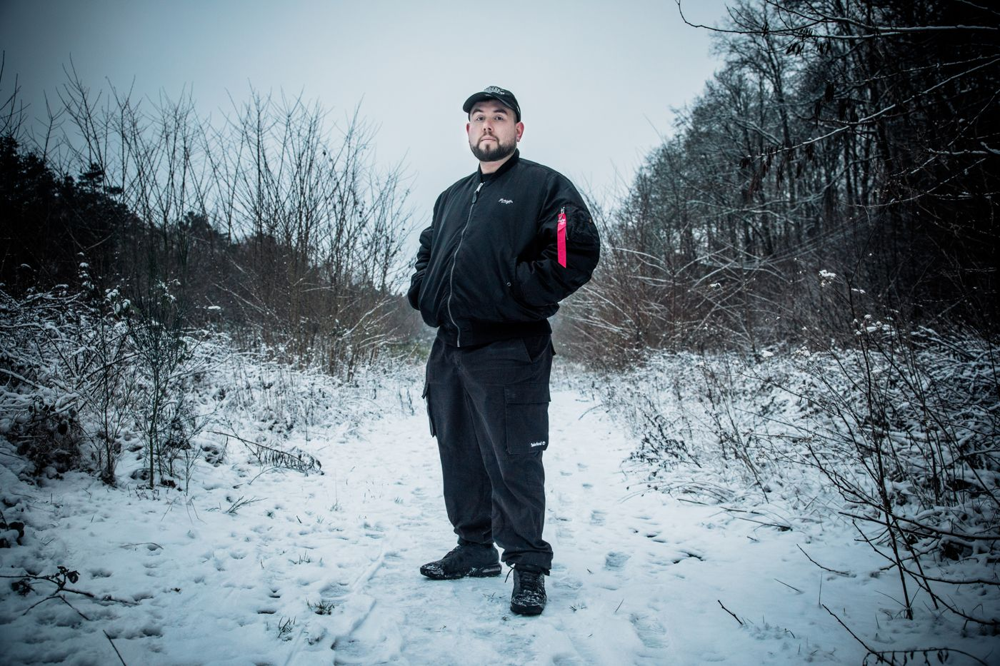
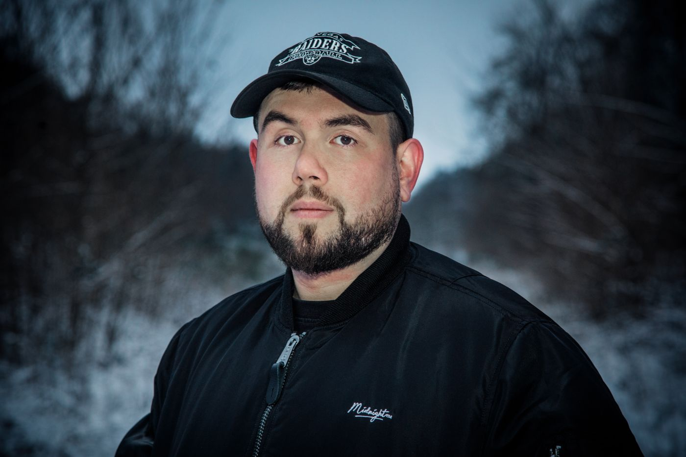

Halloween · Mauerpfeiffer Ebene 2
3-Stunden-Set, 31.10.26, Live Recording Series

A trip from house to techno. Flow, tension and crowd awareness.
Resident DJ im Mauerpfeiffer Saarbrücken
Upcoming

Bio
Im Oktober 2013 nahmen Freunde Timo Rech zum ersten Mal mit in die UBar in Saarbrücken, zu einer Drum-and-Bass- und Techno-Nacht. An diesem Abend hatte er das Gefühl, in eine andere Welt zu geraten. Er verliebte sich in die Szene und kam immer wieder. Über einen DJ-Contest wurde aus dem Gast Timoschinsky, Resident DJ im Mauerpfeiffer.
Heute spielt er groove-orientierten, dramaturgisch aufgebauten Peak Time Techno mit klarem Spannungsbogen und Gespür für die Dynamik des Dancefloors. Im Mauerpfeiffer übernimmt er Warm-ups für international tourende Acts wie Karla Blum, Teenage Mutants oder Thomas Schumacher.
Für Timoschinsky ist der Club ein „dritter Ort“: ein Raum neben Zuhause und Arbeit, an dem Menschen aus allen Milieus zusammenkommen und Toleranz, Offenheit und Demokratie gelebt werden. Als Sprecher der Residents hat er die Startnext-Kampagne „Sei wir!“ angestoßen, damit der Mauerpfeiffer von seiner Community getragen wird statt von Investoren. Kultur soll von unten wachsen, nicht von oben diktiert werden. Mit Rave gegen Rechts setzt er ein eigenes Herzensprojekt um.
Hauptberuflich ist er Sozialarbeiter und baut DJ-Workshops und Musikprojekte für Jugendliche auf. Diese Perspektive prägt sein Verständnis von Clubkultur als Raum für Teilhabe, Empowerment und gemeinsames Erleben.
„Der Mauerpfeiffer ist für mich wie ein zweites Zuhause geworden.“
Timoschinsky im Startnext-Interview
Presse Interview: Wie aus einer Partynacht ein Stück Heimat wurde (Startnext, 2026) Talk: 17 Jahre Clubkultur am Kreisel (Mauerpfeiffer, 2026) SR „Wir im Saarland“: Der Techno-Club Mauerpfeiffer (ARD Mediathek)
Listen
3-Stunden-Set, 31.10.26, Live Recording Series
mit Pappenheimer und DJ Gysi
mit Thomas Schumacher, 27.02.26
Hardgroove, Techno, Acid, 145 BPM
Press photos






Booking